Lab 11: Localization using Bayes Filter (Real)
Objective
The objective of this lab is to perform localization with the Bayes filter on the actual robot in a real physical environment. Because the motion of these robots is extremely noisy in practice, the prediction step provides little value — so only the update step based on full 360° ToF scans is used. A fully-functional and optimized Bayes filter implementation that works on the virtual robot is provided, and I make targeted changes so that it can interface with my real robot.
Ground Truth
Unlike in the simulation environment, there is no automated method to get the real robot's ground truth pose. I instead identify the robot's pose by measuring its distance from the origin (0, 0) of the map in tile units along the x and y directions. For this lab, I place the robot at the four marked positions: (−3, −2), (0, 3), (5, −3), and (5, 3).
Observation Loop
The robot performs a 360° in-place rotation, taking ToF readings at 20° increments starting from its current heading (+0°, +20°, +40°, …, +340° CCW), for a total of 18 readings. Reducing the number of observations reduces the accuracy of the localized pose, so I tune the firmware to reliably capture all 18.
Pre-lab Setup
I set up the base code by copying lab11_sim.ipynb and
lab11_real.ipynb into the notebooks directory,
localization_extras.py into the
FastRobots-sim-release root directory, and the necessary Bluetooth
Python modules (base_ble.py, ble.py,
connection.yaml, cmd_types.py) from previous labs into
the notebooks directory.
- localization_extras.py — provides the fully-functional localization module that works on the virtual robot.
- lab11_sim.ipynb — demonstrates the Bayes filter implementation on the virtual robot.
- lab11_real.ipynb — provides skeleton code to integrate the real robot with the localization code.
Task 1 — Localization in Simulation
Before testing on the real robot, I ran lab11_sim.ipynb to verify that
the provided localization module works correctly in simulation. The simulator runs
the full Bayes filter loop — prediction step from odometry, followed by an
update step from the 18-reading observation scan — at each of 15 trajectory
steps.
Video 1. Bayes filter localization running in the simulator.
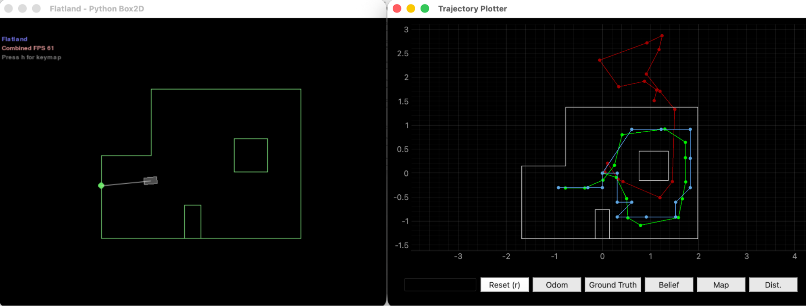
Prediction and Update Stats (Step 0)
The Jupyter notebook prints per-step prediction and update stats. At step 0, the prediction step runs in 0.031 s and the update step in 0.001 s. The prior belief is centered roughly half a cell off from ground truth, with probability 0.117. After the update step, the belief snaps to the correct cell at probability 1.0.
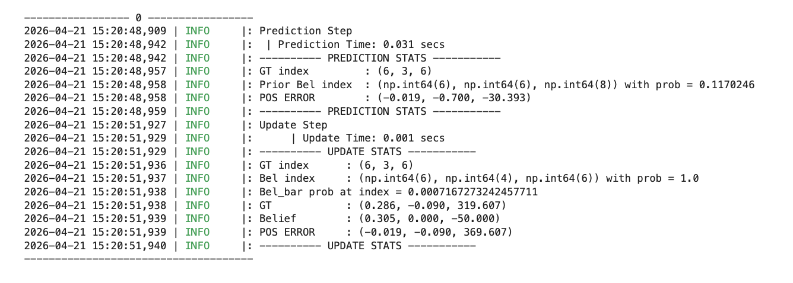
Task 2 — Integrating the Real Robot
For the real robot, I reused the same Arduino firmware from Lab 9 (mapping), since the on-board behavior is identical: rotate in place using orientation PID, settle at each setpoint, log (timestamp, yaw, distance), and dump the buffer over BLE on request. The work in Lab 11 happens almost entirely on the Python side.
The RealRobot class
The localization module calls RealRobot.perform_observation_loop() to
collect the 18 readings. I implemented this method to send the Lab 9 mapping
commands over BLE, drive the robot through 18 setpoints (0°, 20°, …,
340°), then request the data buffer.
The BLE notification handler parses each T:<ms>|Y:<deg>|D:<mm>
string from the Artemis into three buffers:
def _mapping_data_notif_handler(self, uuid, byte_array):
"""Parse 'T:<ms>|Y:<deg>|D:<mm>' strings from the Artemis."""
try:
s = self.ble.bytearray_to_string(byte_array)
kv = dict(item.split(":") for item in s.split("|"))
self.T_arr.append(int(kv["T"]))
self.Yaw_arr.append(float(kv["Y"]))
self.Dist_arr.append(int(kv["D"]))
except Exception as e:
print(f"[notif] error: {e}")The observation loop itself orchestrates the rotation and returns the 18 readings as a column NumPy array of meters (the format the localization module expects):
async def perform_observation_loop(self, rot_vel=120):
self.T_arr.clear()
self.Yaw_arr.clear()
self.Dist_arr.clear()
SETTLE_S = 6.0
self.ble.send_command(CMD_lab9.RESET_YAW, "")
await asyncio.sleep(0.5)
self.ble.send_command(CMD_lab9.START_MAPPING_360_ROTATION, "")
await asyncio.sleep(SETTLE_S)
for setpoint in range(20, 360, 20):
self.ble.send_command(CMD_lab9.SET_ORIENTATION_SETPOINT,
f"{float(setpoint)}")
await asyncio.sleep(SETTLE_S)
self.ble.send_command(CMD_lab9.STOP_MAPPING_360_ROTATION, "")
await asyncio.sleep(1.0)
self.ble.send_command(CMD_lab9.SEND_MAPPING_DATA, "")
await asyncio.sleep(5.0)
n = len(self.Dist_arr)
if n < 18:
raise RuntimeError(f"Got only {n} readings, expected 18. "
f"Increase SETTLE_S or check BLE.")
ranges_m = np.array(self.Dist_arr[:18], dtype=float) / 1000.0
bearings = np.array(self.Yaw_arr[:18], dtype=float)
sensor_ranges = ranges_m[np.newaxis].T
sensor_bearings = bearings[np.newaxis].T
return sensor_ranges, sensor_bearingsasync: The function is declared
async and uses await asyncio.sleep() instead of
time.sleep(). This is required because BLE notifications are delivered
via the asyncio event loop — using a blocking sleep would queue notifications
but prevent them from being processed during the 70+ seconds of the scan, causing
zero readings to actually reach the handler. The async keyword
propagates up: BaseLocalization.get_observation_data() also needs to
be made async, and the notebook cell needs
await loc.get_observation_data().
Task 3 — Localization at the Four Marked Poses
With the RealRobot class implemented, I ran the update step of the
Bayes filter at each of the four marked poses. For each pose, I started from a
uniform prior (no information about the robot's location), then performed the 360°
scan and a single update step. I marked the ground truth (GT) on the plotter
manually in a separate cell, converting from feet to meters:
# ground truth marker for current pose being tested
# change gt_ft for each 4 marked poses, then re-run
FT_TO_M = 0.3048
# pose 1: (-3, -2) pose 2: (0, 3) pose 3: (5, -3) pose 4: (5, 3)
gt_ft = (-3, -2)
gt_m = (gt_ft[0] * FT_TO_M, gt_ft[1] * FT_TO_M)
cmdr.plot_gt(gt_m[0], gt_m[1])
print(f"GT placed at {gt_ft} ft = ({gt_m[0]:.3f}, {gt_m[1]:.3f}) m")Debugging journey at pose (−3, −2)
Getting the first scan to actually produce a localized pose took several iterations of debugging. Most of these issues were also reflected back into the Lab 9 update section, which was revised after I got Lab 11 working.
Issue 1: No odometry plotted, 0 readings received
On my first attempt, the plotter only showed the green ground truth marker and no blue belief dot. The error trace said the observation loop received 0 readings.
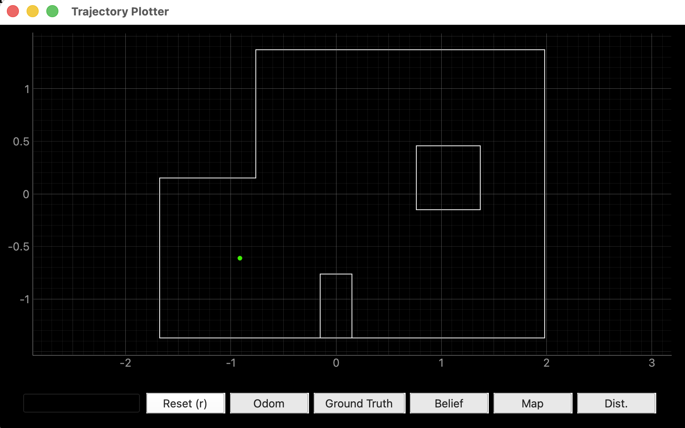
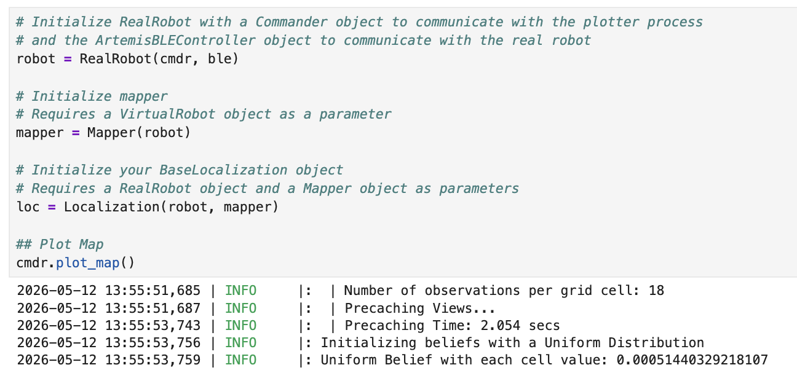
I added a print statement inside the notification handler to confirm whether BLE packets were even reaching Python:
def _mapping_data_notif_handler(self, uuid, byte_array):
print(f"[notif] raw bytes: {byte_array[:40]}") # debug print
...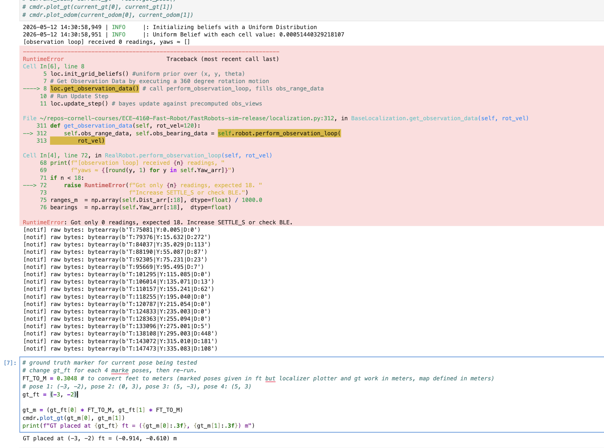
[notif] raw bytes prints arrive afterward. The notifications were
queued during the scan but couldn't be processed until the asyncio loop got
control back — which only happened after the function had already raised
the error.
The fix was switching from synchronous time.sleep() calls to
await asyncio.sleep(), and making
perform_observation_loop() and
BaseLocalization.get_observation_data() both async.
With this change, the asyncio loop gets control back during each sleep and can
deliver notifications as they arrive.
Issue 2: Only 13 of 18 readings received
After the asyncio fix, I started receiving notifications during the scan — but only 13 instead of the required 18. Looking at the yaws of the missed setpoints (155°, 175°, 195°, 255°, 275°), they occurred in consecutive bunches, suggesting the robot was rotating too quickly through certain sections without spending a single PID loop iteration inside the 5° deadzone at those setpoints.
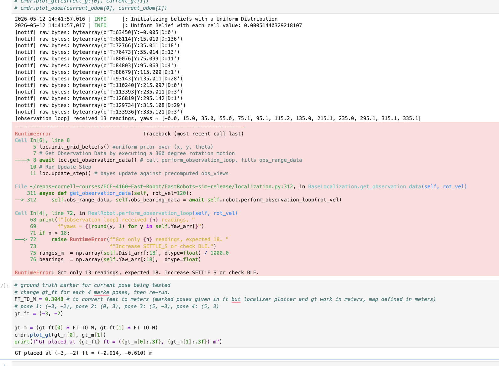
Rather than reduce observations_count in world.yaml (which
would lose localization accuracy), I applied the same firmware tweaks that helped in
Lab 9: widening the yaw deadzone from 5° to 10° and
increasing the per-setpoint settle time from 4 s to 6 s.
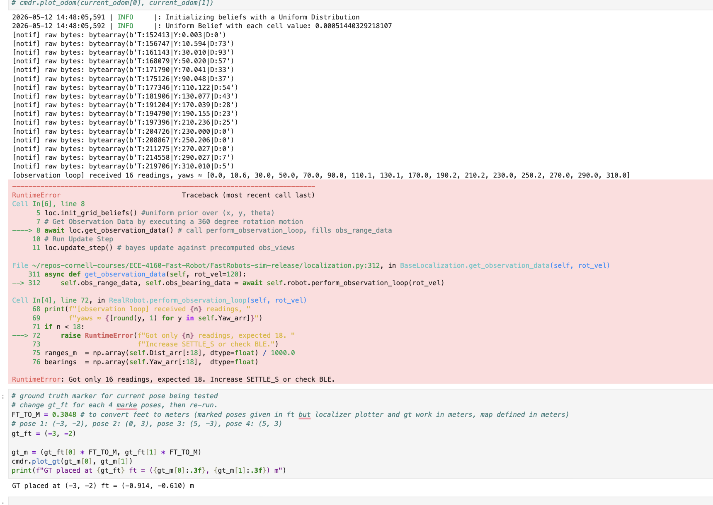
After also increasing the settle time, I finally consistently got the full 18 readings.
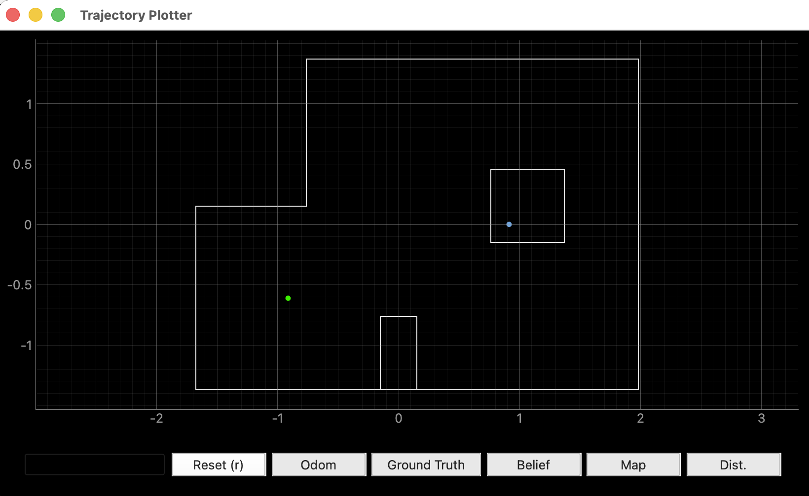
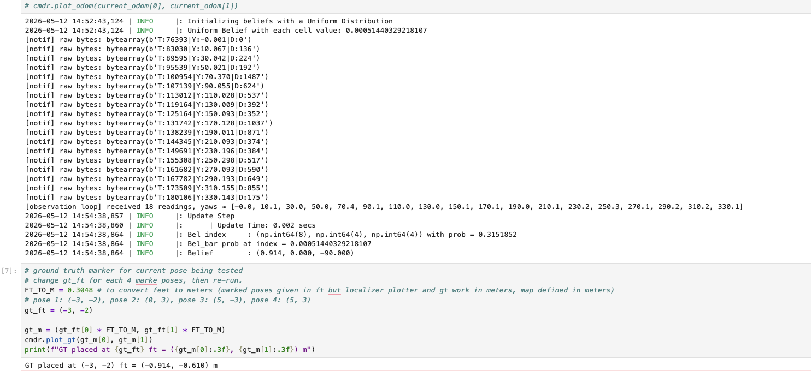
Pose (−3, −2) — initial run reveals heading issue
Video 2. Robot performing the 360° localization scan at pose (−3, −2).
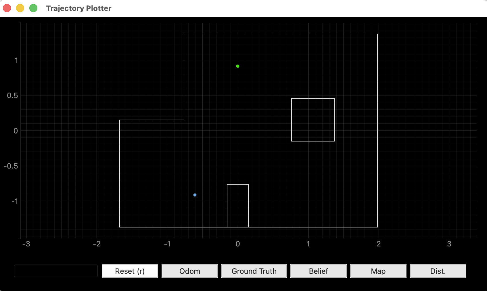
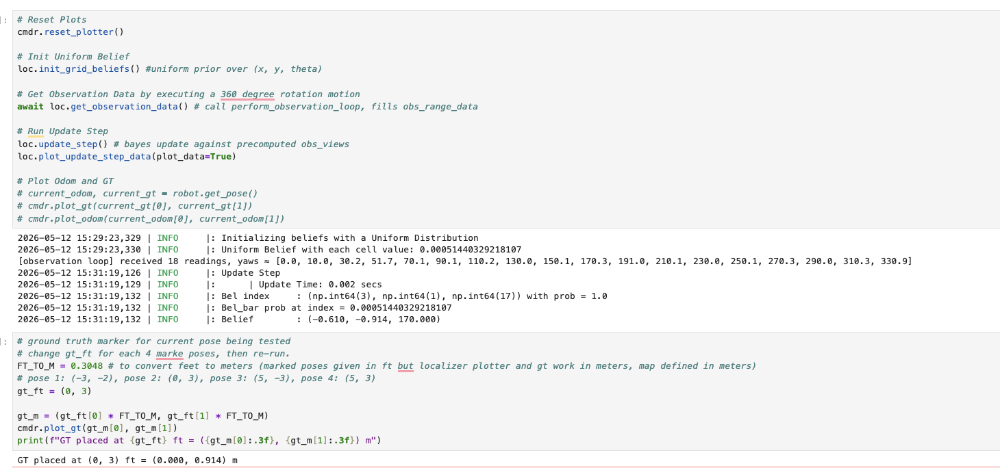
Pose (0, 3) — flipped axes problem
Video 3. Robot performing the 360° localization scan at pose (0, 3).
When I ran the scan at pose (0, 3), the belief landed nowhere near the GT either. The update step printed a belief location in the completely wrong quadrant.
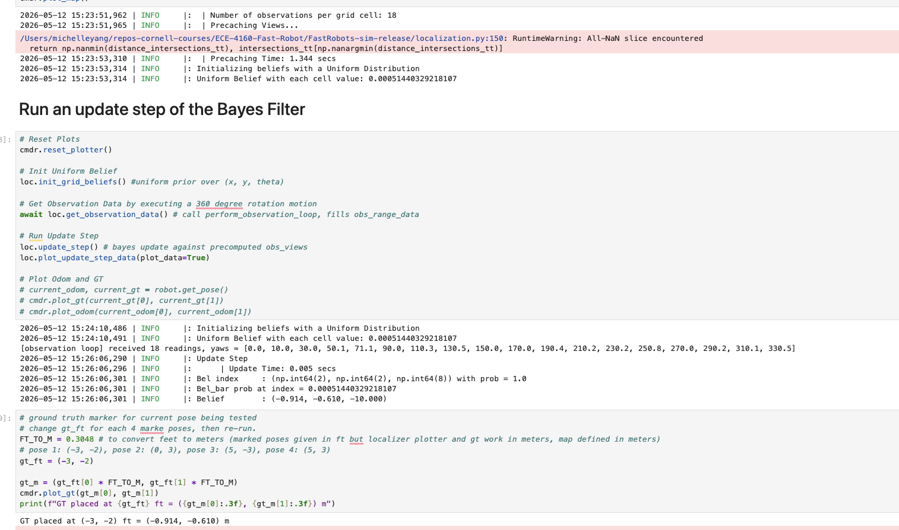
I was always placing the robot facing east (+x direction), so why was the belief interpreting it as facing the wrong way? After thinking about it, I realized the issue: I had been mounting the ToF sensor with its long axis vertical, so the sensor's first reading (at gyro_yaw = 0) wasn't actually pointing along the robot's nose. I changed the orientation of the ToF sensor so that the horizontal is now its long axis and the two mounting holes are on the bottom — making the sensor face directly along the robot's heading direction.
This change worked.
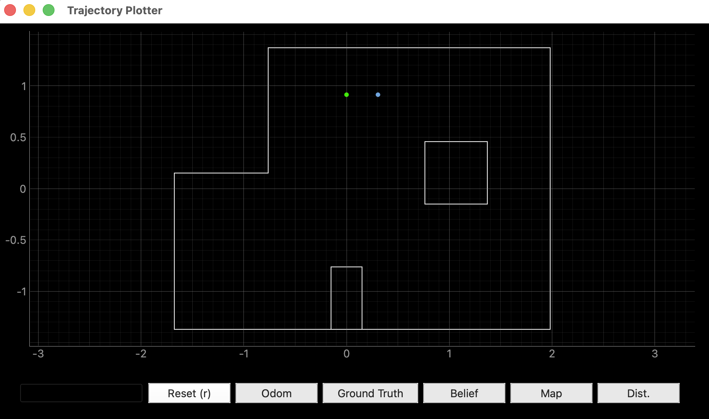
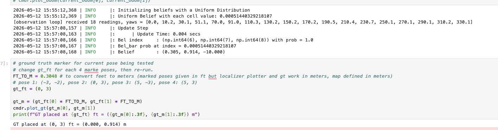
Pose (−3, −2) — redo after the ToF fix
With the ToF sensor reoriented, I returned to pose (−3, −2) and re-ran the scan. This time the belief landed exactly at the GT location.
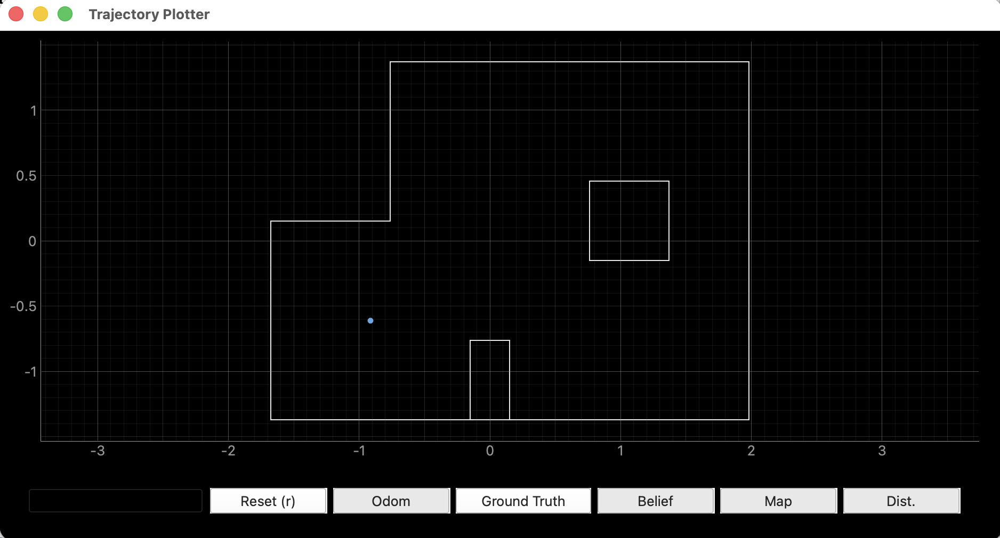
Pose (5, −3)
Video 4. Robot performing the 360° localization scan at pose (5, −3).
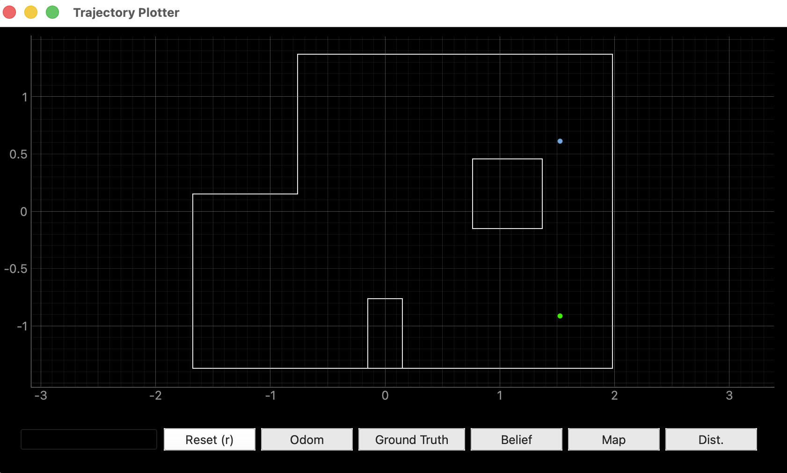
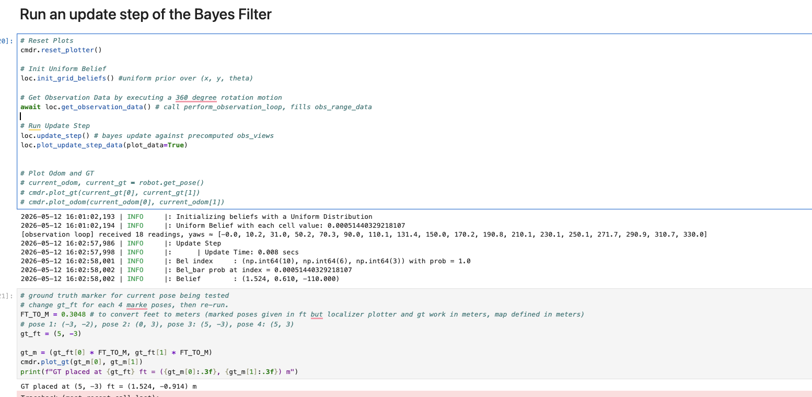
Pose (5, 3)
Video 5. Robot performing the 360° localization scan at pose (5, 3).
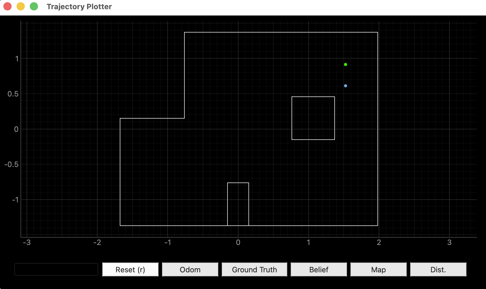
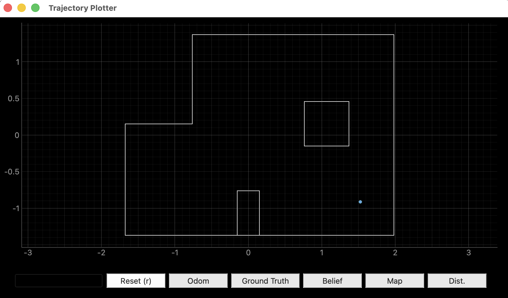
Discussion
Which poses localize well, and which don't?
After the ToF reorientation, pose (0, 3) and the redo of (−3, −2) both gave the best results — the beliefs landed within one grid cell of the GT (XY error 0−0.305 m). Pose (0, 3) is close to the north wall with a long open sightline to the south, giving an asymmetric range signature that the sensor model can match uniquely. Pose (−3, −2) sits near the bottom-left corner with two nearby walls, also distinctive.
Pose (5, −3) had the largest error — the belief landed at (1.524, 0.610), mirroring the GT across the x-axis. Pose (5, 3) was a middle case with about 0.3 m of y-error. These two poses sit in more geometrically symmetric parts of the map where multiple cells produce similar 18-ray range signatures, so the filter can snap to whichever cell scores marginally higher. With probability reported as 1.0 at every timestep due to floating-point underflow, it's hard to distinguish "highly confident" from "least-bad guess".
Why heading matters so much
The single most informative debugging insight came from the heading output of the update step. Even when the position estimate was wrong, the reported heading told me which direction the localizer thought the robot was facing — and comparing that to the direction I knew I had placed the robot (170° reported vs. 0° intended) revealed an offset between the sensor's mount orientation and the robot's apparent heading. Without the ToF re-orientation, every subsequent reading would have been ~180° off from how the obs_views table indexed them, and no amount of tuning would have produced correct localization.
Comparison to simulation
In simulation (Task 1), the Bayes filter tracked the ground truth almost perfectly across all 15 trajectory steps. On the real robot, only two of four poses gave sub-grid-cell errors. Several factors contribute to this gap:
- Sensor noise. The real VL53L1X has range bias, dropped readings, and gets noisier at longer distances — while the simulator's ToF model is much cleaner.
- Gyro drift. Over a 360° rotation, the integrated yaw drifts a few degrees, shifting which actual heading each "20° setpoint" reading corresponds to.
- Map mismatch. The physical map walls aren't perfectly aligned with the world.yaml geometry — tiles aren't exactly 1 ft, walls have gaps, and obstacles have rounded edges.
- Grid resolution. The 0.3048 m positional resolution and 20° angular resolution put a hard floor on how precisely the belief can be placed regardless of sensor quality.
References
- Lab 11 Instructions — Fast Robots @ Cornell
- Jeffery Cai's Lab 11 Report (referenced for how Jeffery approach this task)
- Grammarly writing assistance is used to fix my report's grammar and sentence flow.